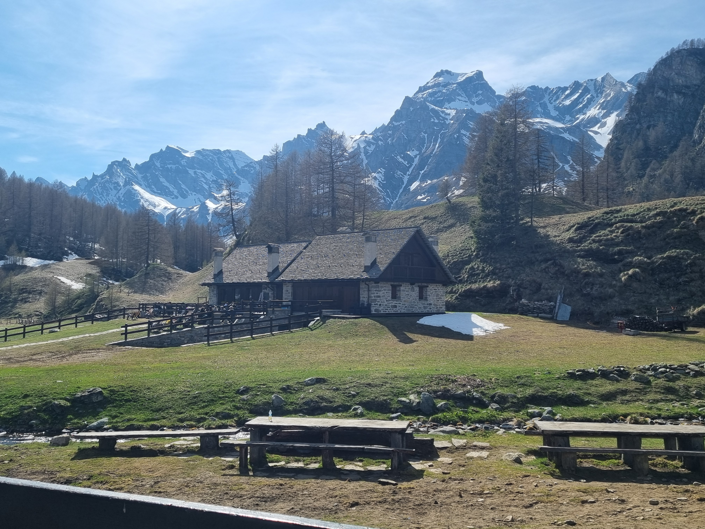
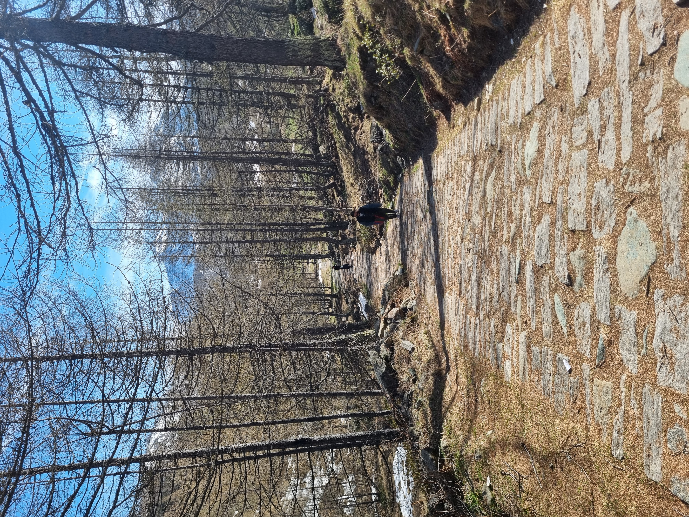
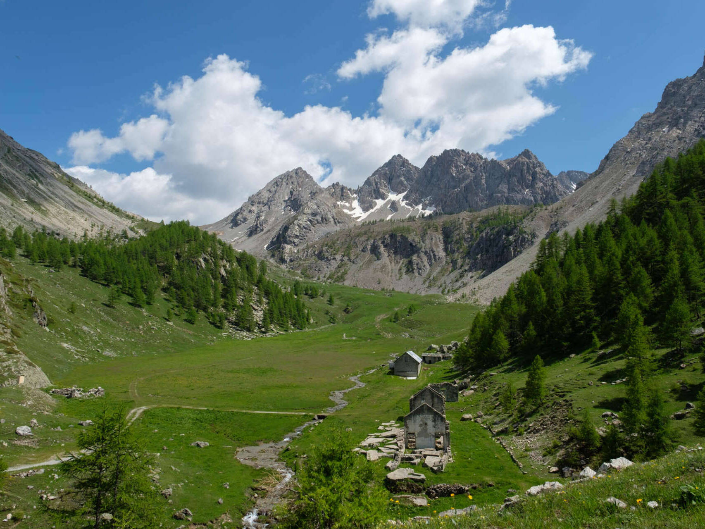
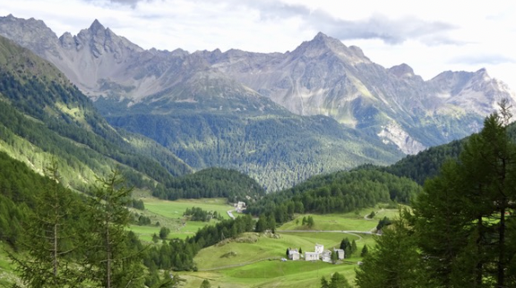

Tutto su sentiero e leggenda

Tra i pendii silenziosi dell'Alpe Devero, poco sopra il minuscolo borgo alpino di Crampiolo, il sentiero sale tra larici e prati luminosi. Le baite di pietra rimangono alle spalle come un ultimo segno dell'uomo, mentre l'aria si fa più fresca e il paesaggio assume quella calma antica che appartiene solo alla montagna. È un cammino breve, ma sembra un passaggio verso un luogo sospeso, dove ogni passo diventa più lento e attento.
Alla fine del sentiero appare il Lago delle Streghe, scuro e immobile come un segreto custodito da secoli. Gli abitanti della valle gli hanno dato questo nome non per paura, ma per il mistero che lo avvolge: la nebbia che si alza all'alba, il riflesso perfetto dei larici, il silenzio che sembra parlare. Si racconta che chi osserva l'acqua con il cuore inquieto possa vedere non il proprio volto, ma ciò che desidera o teme davvero.
Eppure, nulla in questo luogo è minaccioso. Il lago accoglie chi arriva da Crampiolo con una quiete profonda, quasi affettuosa. È un angolo di mondo dove la montagna mostra il suo lato più intimo, dove il silenzio consola e la natura sembra riconoscere chi la ascolta. Un posto che non si limita a essere visto: è un luogo che osserva, che ricorda, che rimane.
Il Sentiero
Percorso
Lago delle Streghe, Val Devero
Difficoltà
Sentiero di tipo “T” dislivello 150 m, fondo asfalto e sentiero battuto
Distanza
2,5 km – 5,3 km a/r
Tempo
45-60 minuti (solo andata)
Dove mangiare
agriturismi e ristoranti a Crampiolo

L’escursione parte comodamente dal parcheggio dell’Alpe Devero, dove è consigliabile arrivare presto, soprattutto nei periodi di alta stagione, per trovare posto senza difficoltà.
Dopo aver parcheggiato, il primo tratto di cammino si snoda lungo una stradina asfaltata che costeggia case alpine ristrutturate e giunge velocemente al seicentesco Oratorio di San Bartolomeo, una prima sosta che regala un’immersione nei colori e nella pace di queste valli.
Proseguendo verso Crampiolo e il Lago delle Streghe, si attraversa il Rio Buscagna e si costeggia una casa bianca con una meridiana e tacche nivometriche, segno della memoria storica delle abbondanti nevicate della zona.
La strada si apre sulla Piana di Devero, un’ampia distesa verde che un tempo era occupata da un lago glaciale e che oggi si presenta come un paradiso naturale dove è facile incontrare la flora e la fauna tipiche di queste altitudini. La segnaletica bianca e rossa lungo il sentiero assicura una guida semplice e chiara, che permette di godere appieno del paesaggio senza preoccupazioni.
In prossimità della Borgata Cantone, un segnale in legno indica la deviazione a destra, verso una mulattiera lastricata che sale gradualmente addentrandosi in un bosco di larici, che in autunno si trasformano in una sinfonia di colori caldi. Dopo una breve salita, si raggiunge il bellissimo borgo alpino di Crampiolo, con le sue casette in pietra e legno perfettamente ristrutturate e la sua caratteristica chiesetta accanto a un piccolo torrente.
Durante il cammino, potrete incontrare antiche baite ristrutturate che aggiungono un tocco di autenticità, richiamando tempi passati e offrendo un assaggio della vita alpina di un tempo.
E, come se la vista non bastasse, il profumo delle eccellenze casearie della zona – in particolare del famoso Bettelmatt – arricchisce l’aria e invita a fare una pausa.
A questo punto, è possibile scegliere fra due percorsi:
- Verso il Lago delle Streghe: prendere il sentiero a sinistra, seguendo il cartello che indica il piccolo lago nascosto tra vegetazione, mirtilli e ginepri. Bastano circa 5 minuti per arrivare al Lago delle Streghe, un incantevole specchio d’acqua verde smeraldo che emerge quasi a sorpresa tra la vegetazione.
- Verso il Lago Devero: chi desidera proseguire l’avventura può attraversare il borgo di Crampiolo e continuare per circa 30 minuti verso il grande Lago Devero (quota 1.850 m), un bacino artificiale dalle acque blu intenso, perfetto per scattare foto indimenticabili.
Per tornare, è possibile ripercorrere lo stesso itinerario oppure, in estate, fare un giro ad anello percorrendo la mulattiera ombreggiata che riporta all’Alpe Devero.
Mappa del Sentiero
Da Sapere
- Percorribile in inverno: No
- Percorribile in bici: Sì
- Periodo consigliato: Da luglio a ottobre
- Rifugi e ristoro: Presenti
- Copertura telefonica: Parziale
- Punti Acqua: Sì
- Gestione area protetta: Ente di gestione delle Aree Protette dell’Ossola
La Leggenda del Lago delle Streghe
Esiste una leggenda dietro al Lago delle Streghe: è la storia di una giovane donna e di come un amore spezzato trasformò per sempre il suo destino e le acque di un laghetto di montagna.
La leggenda racconta di una fanciulla, bella e innamorata, che viveva in una valle con il suo promesso sposo.
Le giornate scorrevano serene, immerse nel ritmo della natura, finché un giorno la tranquillità si spezzò: il ragazzo s’innamorò di un’altra e la lasciò.
Col cuore infranto, la giovane iniziò a cercare conforto tra i larici del bosco. Andava lì tutti i giorni, fino a che, un pomeriggio, vide una vecchina che tesseva seduta su una roccia.
La sua vista la calmò così tanto che la ragazza decise di confidarle tutte le sue pene d’amore. Quando ebbe finito, le fu chiaro che in realtà aveva appena raccontato il suo dolore ad una strega.
Presa dal dolore, non ci pensò due volte a chiederle un incantesimo d’amore per far tornare il suo amato. La vecchia sorrise con occhi profondi e accettò di farle un incantesimo.
Portò la ragazza in una grotta lì vicino in cui erano nascoste due pozze d’acqua.
“In una pozza vedrai l’amore fugace e terreno; nell’altra, l’amore eterno, quello che appartiene agli dei.”
La giovane si specchiò nella prima pozza e vide il volto del suo amato, ma presto il viso iniziò a cambiare, invecchiando e deteriorandosi.
Turbata, si voltò verso la seconda pozza, dove apparve il volto di un uomo radioso e giovane, immutato dal tempo.
La strega spiegò che avrebbe dovuto scegliere tra il conforto dell’amore umano, breve e incerto, o quello eterno e divino, che l’avrebbe legata per sempre al mondo delle streghe.
Dopo un attimo di esitazione, la ragazza scelse l’amore eterno, entrando così nel mondo incantato delle streghe.
D’improvviso, le pozze si ritirarono e al loro posto si creò un lago dal colore magico, nascosto tra le rocce e i prati.
Da quel giorno, si dice che chi giunge sulle sue sponde e guarda a fondo nelle sue acque riesca a scorgere verità nascoste.
Luoghi da Visitare
Il Parco Naturale Alpe Veglia e Alpe Devero

Il Lago delle Streghe si trova nel cuore del Parco Naturale dell’Alpe Veglia e dell’Alpe Devero, un’area protetta di oltre 8.500 ettari che si estende tra i comuni di Varzo, Trasquera, Crodo e Baceno, in Piemonte.
Istituito nel 1995, questo parco nasce dalla fusione tra due precedenti aree naturali e si estende su un dislivello straordinario, dai 1.600 metri di altitudine fino agli spettacolari 3.553 metri. Il parco non solo offre un riparo sicuro per la fauna e la flora alpina, ma permette anche di esplorare paesaggi modellati dal tempo e dai ghiacciai, che hanno scolpito vallate, depositato massi erratici e creato una costellazione di laghetti e prati d’alta quota.
Il territorio è una vera gemma per gli amanti della natura. Gli ampi pascoli, interrotti qua e là da boschi di larici, si trasformano gradualmente in prati montani, dove il sottobosco regala un’esplosione di colori grazie ai rododendri, ai mirtilli e ai fiori tipici delle Alpi come il ranuncolo glaciale, la silene e il miosotis azzurro. Salendo in quota si incontrano altre specie uniche come il crisantemo alpino, l’astro alpino e il rarissimo genepì, sia maschio che femmina, simbolo delle altitudini più estreme.

Anche la fauna del parco è particolarmente varia e ricca di sorprese. Qui si possono avvistare camosci e stambecchi, padrone delle rocce e dei pendii scoscesi, mentre le marmotte si nascondono nei prati a bassa quota. In inverno, le lepri variabili e le pernici bianche si mimetizzano con la neve, e più in alto, i maestosi gipeti e le aquile reali solcano i cieli, affiancati dalle presenze fugaci di cervi, caprioli, cinghiali e lupi. È un paesaggio da esplorare con lo sguardo e col cuore, dove ogni angolo nasconde una sorpresa e ogni sentiero invita a scoprire nuovi scorci e dettagli.